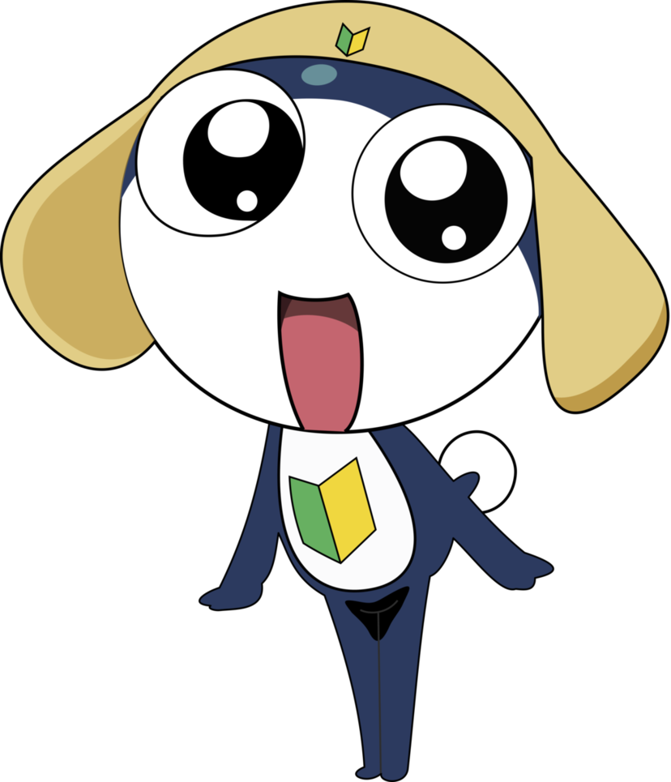

작중에서 2번째로 등장한 케론인. 아직 어려서 꼬리가 있다. 계급은 이등병으로, 케로로 소대의 돌격병이자 육탄전 담당 대원이다. 소대의 센터링, 마스코트도 겸으로 담당하고 있다. 엮이는 인간 파트너는 니시자와 모모카.
좋아하는 것은 과자 전반, 그 중에서도 특히 단 것이다.
취미는 육체 단련. 니시자와가에는 전용 트레이닝 룸을 가지고 있다. 과자를 먹는 것 뿐 아니라 만드는 일도 취미이며 실력도 나쁘지 않아서 다른 소대원들에게 가르쳐 주기도 했다.
말버릇은 ~예용(~ですぅ). 존댓말을 꼬박꼬박 사용하지만 주로 앙골 모아에 대한 분노가 극도로 강할 때는 반말을 쓰기도 한다. 또한 히나타 후유키를 '훗키', 히나타 나츠미를 '낫치', 니시자와 모모카를 '모못치'라는 애칭으로 부른다. 그리고 계급이 낮은 말단이기 때문에 케로로를 비롯한 모든 소대원들을 계급+님(さん)으로 부른다. (예:케로로-군소 상) 단, 앙숙인 모아는 예외, 절대 이름을 말하지 않고 '이 여자', '저 여자', '그 여자' 라고 부른다.